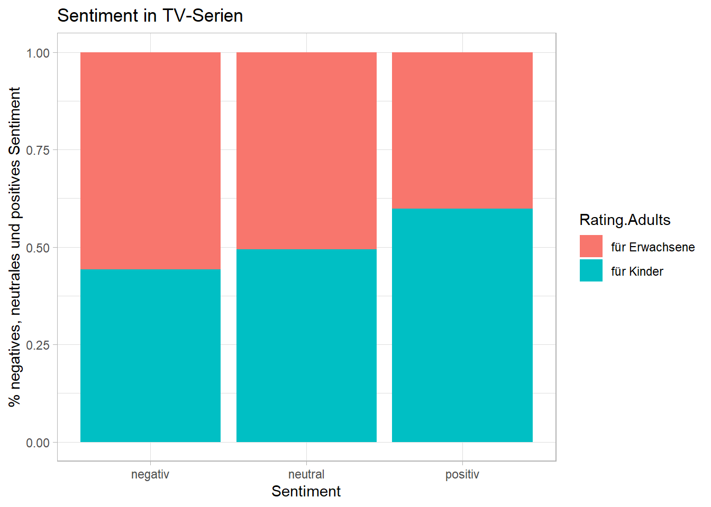

#install.packages("tidyverse)
#install.packages("RCurl")
#install.packages("quanteda")
library("tidyverse")
library("RCurl")
library("quanteda")Sitzung 3: Diktionäre
1. Pakete laden und Daten einlesen
Zunächst installieren alle Pakete, die wir für diese Sitzung brauchten (z.B. tidyverse). Ihr braucht install.packages() nur, wenn ihr die Pakete im Methodencafe noch nicht installiert hattet.
Nun lesen wir die Daten wieder ein und führen die bereits erlernten Preprocessing-Schritte, inkl. der Transformation in eine Document-Feature-Matrix, aus.
Wir lassen einige Preprocessing-Schritte (u.a. die Entfernung von Stoppwörtern, Stemming, Relative Pruning) diesmal weg, u. a. weil das von uns genutzte Diktionär bereits gestemmte Features enthält und weil wir z. B. seltene negative/positive Wörter hier nicht entfernen wollen:
# Daten laden
url <- getURL("https://raw.githubusercontent.com/valeriehase/textasdata-ms/main/data/data_tvseries.csv")
data <- read.csv2(text = url)
# Preprocessing
tokens <- tokens(data$Description,
what = "word", #Tokenisierung, hier zu Wörtern als Analyseeinheit
remove_punct = TRUE, #Entfernung von Satzzeichen
remove_numbers = TRUE) %>% #Entfernung von Zahlen
# Kleinschreibung
tokens_tolower()
# Text-as-Data Repräsentation als Document-Feature-Matrix
dfm <- tokens %>%
dfm() Jetzt sind wir bereit für die ersten Analysen mit Diktionären!
2. Off-the-Shelf Diktionäre
2.1 Diktionär auswählen
Es gibt viele off-the-Shelf Diktionäre. Der Einfachkeit halber nutzen wir hier zur Demonsrtation das data_dictionary_LSD2015-Diktionär aus dem quanteda- Paket (Young & Soroka, 2012).
# Wir schauen uns das Diktionär an
data_dictionary_LSD2015 %>%
head()Dictionary object with 4 key entries.
- [negative]:
- a lie, abandon*, abas*, abattoir*, abdicat*, aberra*, abhor*, abject*, abnormal*, abolish*, abominab*, abominat*, abrasiv*, absent*, abstrus*, absurd*, abus*, accident*, accost*, accursed* [ ... and 2,838 more ]
- [positive]:
- ability*, abound*, absolv*, absorbent*, absorption*, abundanc*, abundant*, acced*, accentuat*, accept*, accessib*, acclaim*, acclamation*, accolad*, accommodat*, accomplish*, accord, accordan*, accorded*, accords [ ... and 1,689 more ]
- [neg_positive]:
- best not, better not, no damag*, no no, not ability*, not able, not abound*, not absolv*, not absorbent*, not absorption*, not abundanc*, not abundant*, not acced*, not accentuat*, not accept*, not accessib*, not acclaim*, not acclamation*, not accolad*, not accommodat* [ ... and 1,701 more ]
- [neg_negative]:
- not a lie, not abandon*, not abas*, not abattoir*, not abdicat*, not aberra*, not abhor*, not abject*, not abnormal*, not abolish*, not abominab*, not abominat*, not abrasiv*, not absent*, not abstrus*, not absurd*, not abus*, not accident*, not accost*, not accursed* [ ... and 2,840 more ]2.2 Features aus Diktionär identifizieren
Mit der Funktion dfm_lookup() aus dem quanteda Packet wird für jeden Text, also in diesem Fall für jede TV-Show, geschaut, wie viele Wörter aus den ersten zwei Spalten des Diktionärs (positive bzw. negative Wörter) vorkommen.
Die Funktion dfm_weight(scheme = "prop") setzt die Anzahl der Features, die gematched werden, ins Verhältnis mit der Länge des Textes, d.h. normalisiert für diese.
Dadurch erhalten längere Texte nicht fälschlicherweise einen “höheren” Match mit Features aus dem Diktionär, nur weil sie generell mehr Wörter enthalten (und damit ggf. “zufällig” ein positives oder negatives Wort enthalten).
sentiment_tvshows <- dfm %>%
# Suche nach Features aus Diktionär
# Gewichtung relativ zur Anzahl aller Wörter
dfm_weight(scheme = "prop") %>%
dfm_lookup(dictionary = data_dictionary_LSD2015[1:2])
# Ausgabe der Ergebnisse
sentiment_tvshows %>%
head()Document-feature matrix of: 6 documents, 2 features (8.33% sparse) and 0 docvars.
features
docs negative positive
text1 0.09523810 0.04761905
text2 0.04000000 0.04000000
text3 0.13636364 0.04545455
text4 0 0.04545455
text5 0.11538462 0.11538462
text6 0.02857143 0.05714286Wir sehen z. B. für die allerste Beobachtung, die Beschreibung von Game of Thrones:
data$Description[1][1] "Nine noble families fight for control over the lands of Westeros, while an ancient enemy returns after being dormant for millennia."- Der erste Text enthält ein Feature, das mit positivem Sentiment assoziiert wird (“noble”). Bei insgesamt 21 Features im Satz sind das 4.76% positives Sentiment für diese Serienbeschreibung.
- Der erste Text enthält zwei Features, die mit negativem Sentiment assoziiert werden (“fight”, “enemy”). Bei insgesamt 21 Features im Satz sind das 9.52% positives Sentiment für diese Serienbeschreibung.
2.3 Texte klassifizieren
Welche Analysen könnten wir jetzt vornehmen?
Wir könnten z. B. Texte als neutral, positiv oder negativ einstufen (je nachdem, ob sie gleich viele oder mehr/weniger positive bzw. negative Feature enthalten).
Dazu müssen wir das Ergebnis mit convert() zu einem Dataframe unwandeln.
# Ergebnis für die weitere Analyse in einen Dataframe umwandeln
sentiment_tvshows <- convert(sentiment_tvshows,
to = "data.frame") %>%
# Umwandlung in tibble-Format
as_tibble %>%
# Wir ergänzen zunächst wieder die Serientitel & das "Parental-Rating"
mutate(Title = data$Title,
Parental.Rating = data$Parental.Rating) %>%
# Wir erstellen eine Variable, die Texte als
# "neutral", "positiv" oder "negativ" identifiziert
# Zunächst gelten alle Texte als "neutral"
mutate(sentiment = "neutral",
# Falls mehr pos. als neg: "positiv"
sentiment = replace(sentiment,
positive > negative,
"positiv"),
# Falls mehr neg. als pos.: "negativ"
sentiment = replace(sentiment,
positive < negative,
"negativ")) %>%
# Sortierung der Variablen
select(Title, Parental.Rating, positive, negative, sentiment)
# Ausgabe des Ergebnis
sentiment_tvshows %>%
head()# A tibble: 6 × 5
Title Parental.Rating positive negative sentiment
<chr> <chr> <dbl> <dbl> <chr>
1 1. Game of Thrones TV-MA 0.0476 0.0952 negativ
2 2. Breaking Bad TV-MA 0.04 0.04 neutral
3 3. Stranger Things TV-14 0.0455 0.136 negativ
4 4. Friends TV-14 0.0455 0 positiv
5 5. The Walking Dead TV-MA 0.115 0.115 neutral
6 6. Sherlock TV-14 0.0571 0.0286 positiv Dann könnten wir mit count() aus dem tidverse-Paket analysieren, wie viele Texte positiv vs. negativ sind:
# Anzahl neutral, negativer und positiver Texte?
sentiment_tvshows %>%
# absolute Anzahl jeder Sentiment-Art (n)
count(sentiment) %>%
# Ausgabe in Prozent (perc)
mutate(perc = prop.table(n)*100,
perc = round(perc, 2))# A tibble: 3 × 3
sentiment n perc
<chr> <int> <dbl>
1 negativ 406 45.1
2 neutral 234 26
3 positiv 260 28.9Insgesamt scheinen die beliebtesten Serien also recht düster zu sein. Welche sind denn die negativsten Serien laut unserer Sentiment-Analyse?
Hierfür nutzen die wir arrange()-Funktion aus dem tidyverse-Paket.
# Negativste Serien
sentiment_tvshows %>%
arrange(desc(negative)) %>%
slice(1:5)# A tibble: 5 × 5
Title Parental.Rating positive negative sentiment
<chr> <chr> <dbl> <dbl> <chr>
1 480. Leverage TV-PG 0.0714 0.286 negativ
2 824. The Glory TV-MA 0 0.286 negativ
3 115. 24 TV-14 0 0.25 negativ
4 205. Revenge TV-14 0 0.235 negativ
5 284. Falling Skies TV-14 0.0588 0.235 negativ Und welche die positivsten?
# Positivste Serien
sentiment_tvshows %>%
arrange(desc(positive)) %>%
slice(1:5)# A tibble: 5 × 5
Title Parental.Rating positive negative sentiment
<chr> <chr> <dbl> <dbl> <chr>
1 262. Dead to Me TV-MA 0.238 0.0952 positiv
2 510. Ghost Whisperer TV-PG 0.226 0.0323 positiv
3 704. The Bugs Bunny Show TV-G 0.222 0 positiv
4 531. Ugly Betty TV-PG 0.211 0.0526 positiv
5 532. Coupling TV-14 0.211 0 positiv 2.4 Gruppenvergleich
Jetzt können wir noch visualisieren, ob Serien mit “höherem” Parental-Rating auch negativer sind.
Dafür erstellen wir zunächst eine Variable Rating.Adults, die kennzeichnet, ob Serien als TV-MA, d.h. als ungeeignet für Jugendliche und Kinder bis inkl. 17 Jahren eingestuft wurden, oder nicht bzw. die Serie nicht gerated wurde:
sentiment_tvshows <- sentiment_tvshows %>%
#Erstellen eines "Rating.Adults"-Klassifizierungs-Variable
mutate(Rating.Adults = 0,
Rating.Adults = replace(Rating.Adults,
Parental.Rating == "TV-MA",
1))
#Wir schauen uns die Ergebnisse an
head(sentiment_tvshows)# A tibble: 6 × 6
Title Parental.Rating positive negative sentiment Rating.Adults
<chr> <chr> <dbl> <dbl> <chr> <dbl>
1 1. Game of Thrones TV-MA 0.0476 0.0952 negativ 1
2 2. Breaking Bad TV-MA 0.04 0.04 neutral 1
3 3. Stranger Things TV-14 0.0455 0.136 negativ 0
4 4. Friends TV-14 0.0455 0 positiv 0
5 5. The Walking Dead TV-MA 0.115 0.115 neutral 1
6 6. Sherlock TV-14 0.0571 0.0286 positiv 0Für die Visualisierung nutzen wir hier die ggplot()-Funktion aus dem tidyverse-Paket. Wenn ihr noch nie mit ggplot gearbeitet habt, braucht ihr den nachfolgenden Code nicht im Detail verstehen (s. ein längere Tutorial hier).
Zunächst erstellen wir das Objekt plot, das durch group_by() aus dem tidyverse-Paket die nach Rating gruppierten Werte enthält.
plot <- sentiment_tvshows %>%
# Wir berechnen die gruppierten Häufigkeiten
group_by(Rating.Adults) %>%
# absolute Anzahl jeder Sentiment-Art (n)
count(sentiment) %>%
# Ausgabe in Prozent (perc)
mutate(perc = prop.table(n)*100,
perc = round(perc, 2)) %>%
# Wir heben die Gruppierung auf
ungroup()
# Visualisierung
ggplot(plot, aes(fill = Rating.Adults, y = perc, x = sentiment)) +
# Wir kreiern den entsprechenden Graphen
geom_bar(stat ="identity") +
# Wir fügen Achsenbeschriftungen hinzu
labs(y = "% negatives, neutrales und positives Sentiment",
x = "Sentiment",
title = "Sentiment in TV-Serien",
colour = "Sentiment") +
# Wir ändern das Background-Design
theme_light() +
# Wir entfernen die Legende, die wenig hilfreich ist
theme(legend.position = "none")
3. Organische Diktionäre
Oftmals kann es sinnvoller sein, ein eigenes, sogenanntes “organisches” Diktionär zu entwickeln.
3.1 Diktionär erstellen
Dafür erstellen wir zunächst mit dictionary() aus dem quanteda-Paket eine eigene Wortliste. Hier wollen wir auf Basis eines organischen Diktionärs Serien identifizieren, die sich mit “Crime” beschäftigen (ähnlich wie in Sitzung 1!).
diktionär_crime <- dictionary(list(crime = c("crim*", "police*", "gun*",
"shot*", "dead*", "murder*",
"kill*", "court*", "suspect*",
"witness*", "arrest*", "officer*",
"verdict*")))3.2 Features aus Diktionär identifizieren
Dann werten wir die Ergebnisse gleichermassen aus:
#Diktionär anwenden
crime_tvshows <- dfm %>%
dfm_weight(scheme = "prop") %>%
dfm_lookup(dictionary = diktionär_crime)
# Ergebnis für die weitere Analyse in einen Data Frame umwandeln
crime_tvshows <- convert(crime_tvshows,
to = "data.frame") %>%
# Umwandlung in tibble-Format
as_tibble %>%
# Wir ergänzen zunächst wieder die Serientitel
mutate(Title = data$Title) %>%
# Wir erstellen eine Variable, die Texte als
# "crime" oder "non-Crime" identifiziert
mutate(crime_binary = "crime",
crime_binary = replace(crime_binary,
crime == 0,
"non-crime")) %>%
# Sortierung der Variablen
select(Title, crime, crime_binary)
#Ausgabe der Ergebnisse
head(crime_tvshows)# A tibble: 6 × 3
Title crime crime_binary
<chr> <dbl> <chr>
1 1. Game of Thrones 0 non-crime
2 2. Breaking Bad 0 non-crime
3 3. Stranger Things 0 non-crime
4 4. Friends 0 non-crime
5 5. The Walking Dead 0 non-crime
6 6. Sherlock 0 non-crime 3.3 Texte klassifizieren
Dann könnten wir analysieren, wie viele Serien Krimi-Serien sind (oder eben nicht):
#Ausgabe der Crime vs. Non-Crime Serien
crime_tvshows %>%
# absolute Anzahl jeder Sentiment-Art (n)
count(crime_binary) %>%
# Ausgabe in Prozent (perc)
mutate(perc = prop.table(n)*100,
perc = round(perc, 2))# A tibble: 2 × 3
crime_binary n perc
<chr> <int> <dbl>
1 crime 170 18.9
2 non-crime 730 81.1Und welche Serie wird am “klarsten” als Krimi eingestuft?
crime_tvshows %>%
arrange(desc(crime)) %>%
slice(1:5)# A tibble: 5 × 3
Title crime crime_binary
<chr> <dbl> <chr>
1 742. Behzat Ç: An Ankara Detective Story 0.267 crime
2 815. Southland 0.25 crime
3 264. American Crime Story 0.182 crime
4 162. Bodyguard 0.176 crime
5 314. Bosch 0.154 crime Aufgabe 1 üìå
Die folgende Übung testet eure Kenntnisse im Hinblick auf Diktionäre!
Aufgabe 1.1 (Basis)
Könnt ihr analysieren, wie viel Prozent der Serien Science-Fiction Serien sind?
Aufgabe 1.2 (Fortgeschritten)
Könnt ihr analysieren, welche fünf Science-Fiction Serien die (nach Publikums-Votum laut Number.of.Votes) beliebtesten Serien sind?